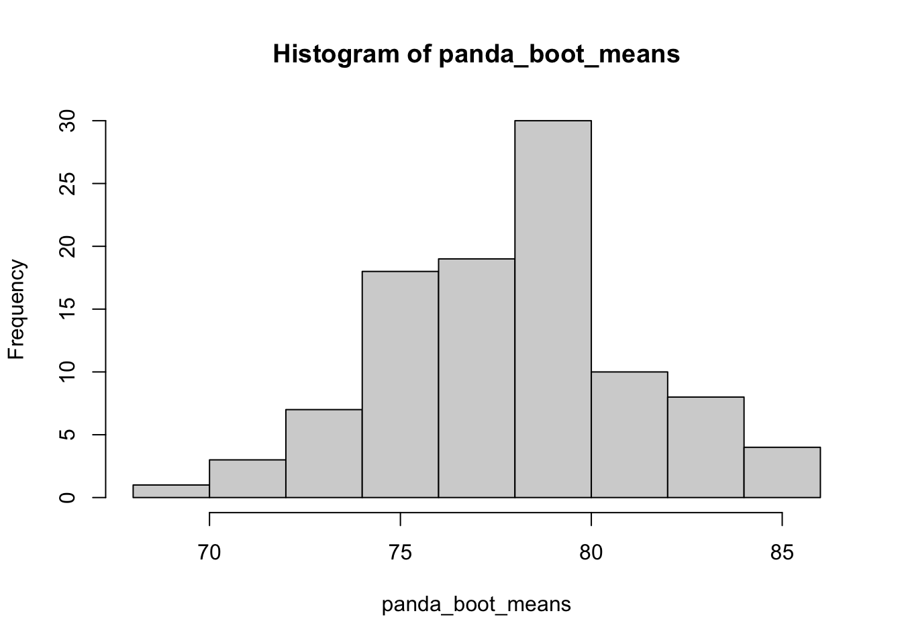
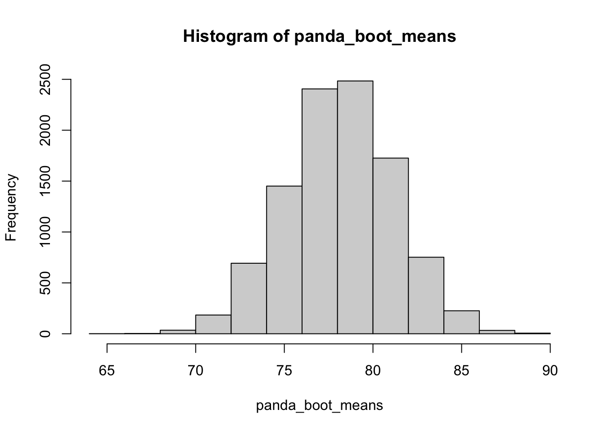

set.seed(2023)自助法 (Bootstrapping) 是一种再抽样方法, 它常用于计算某个估计量(或统计量)的偏差, 标准误和置信区间等.
本实验以”为熊猫丫丫称重”为例, 介绍自助法的使用.
set.seed(2023)熊猫饲养员想要为熊猫丫丫称重. 她将丫丫多次诱骗到称重机上, 但由于丫丫在称重机上不停翻滚, 每次测量均有较大误差.
假设饲养员为丫丫称重十次, 每次的体重为:
k_weights <- c(93, 77, 62, 78, 75, 85, 66, 83, 91, 72)为了减少噪声带来的干扰, 一个简单的方法是求均值:
panda_mean = mean(k_weights)我们得到的样本均值 78.2 只是 “一个” 统计量. 如果不对”模型”添加额外假设, 我们无法对 78.2 这个结果进行统计推断, 也无法判断这个结果的准确性如何.
我们用函数 sample() 进行再抽样. 不同于交叉验证, 自助法进行的是有放回的抽样, 因此设定参数 replace=TRUE:
sample(k_weights, size=10, replace=TRUE) [1] 75 91 83 62 72 77 93 93 93 93我们进行 K=100 次再抽样:
K = 100
panda_boots <- replicate(K, sample(k_weights, size=10, replace=TRUE))我们通过再抽样得到的样本 panda_boots 是一个 10 行 100 列的矩阵:
dim(panda_boots)[1] 10 100对矩阵的每一列求均值, 我们得到一个长度为 100 的向量:
panda_boot_means <- apply(panda_boots, 2, mean)
length(panda_boot_means)[1] 100panda_boot_means 包含比 mean(k_weights) 更多的信息. 直觉上, panda_boot_means 可以看成是均值统计量的100次 realizations.
panda_boot_means 的(样本)方差可用作对均值统计量标准误的估计 (bootstrap standard error).
sd(panda_boot_means)[1] 3.269542hist(panda_boot_means)
上面的分析中, 我们进行了 K=100 次再抽样. 借助现代电脑, 我们可以进行 K=1000 或 K=10000 次再抽样, 进而得到关于标准误更准确的估计. 此外, 更大的 K 有利于我们给出关于均值统计量更准确的置信区间.
在这个简单的例子中, 根据中心极限定理, 当 较大时 panda_boot_means 应近似服从正态分布. 我们可以直接根据bootstrape标准误来构造 95% 置信区间:
qnorm(0.025)[1] -1.959964K = 10000
panda_boots <- replicate(K, sample(k_weights, size=10, replace=TRUE))
panda_boot_means <- apply(panda_boots, 2, mean)
hist(panda_boot_means)
panda_se = sd(panda_boot_means)c(panda_mean - 1.96*panda_se,
panda_mean + 1.96*panda_se)[1] 72.21744 84.18256本实验用一个简单例子说明了 bootstrap 方法的使用. 我们用到了 sample 函数来进行再抽样.
实际应用中, 研究人员一般不会使用 sample 函数来手写再抽样代码, 而是直接调用相关的 R 包—如 boot 和 tidymodels—来进行 bootstrap 估计.